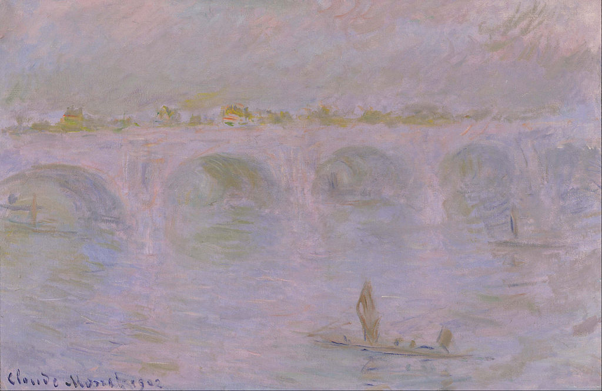

<head>
<meta charset="UTF-8" />
<meta name="keywords" content="drawing, painting" />
<meta name="description" content="drawings by Sunjy" />
<title>Sunjy</title>
<link rel="shortcut icon" type="image/x-icon" href="../../mImages/mCommon/favicon.ico" media="screen" />
<link rel="stylesheet" type="text/css" href="../../mCsses/mCommon/mCssA.css" />
<link rel="stylesheet" type="text/css" href="../../mCsses/mCommon/mCssB.css" />
<link rel="stylesheet" type="text/css" href="../../mCsses/mCommon/mCssC.css" />
<link rel="stylesheet" type="text/css" href="../../mCsses/mCommon/mCssD.css" />
<link rel="stylesheet" type="text/css" href="../../mCsses/mContent/mCssA.css" />
<link rel="stylesheet" type="text/css" href="../../mCsses/mContent/mCssB.css" />
<link rel="stylesheet" type="text/css" href="../../mCsses/mContent/mCssC.css" />
<link rel="stylesheet" type="text/css" href="../../mCsses/mContent/mCssD.css" />
</head>
<script type="text/javascript" src="../../mScripts/mContent/mContentAA.js" /></script>
<script type="text/javascript" src="../../mScripts/mContent/mContentAB.js" /></script>
<script type="text/javascript" src="../../mScripts/mContent/mContentAC.js" /></script>
<script type="text/javascript" src="../../mScripts/mContent/mContentAD.js" /></script>
<script type="text/javascript"></script> 
<script type="text/javascript">
document.write('<div class="mImgAbsolute"></div>');
/*
document.write('<p class="mFontSizeBColor" />From a white paper...</p>');
document.write('<table class="center"><tr><td>');
document.write('');
document.write('</td></tr></table>');
*/
</script>


<script type="text/javascript">
document.write('<p class="mFontSizeBColor" />Waterloo Bridge in London </p>');
document.write('<p class="mFontSizeSColor" />Waterloo Bridge in London by Claude Monet is a composition in which he deliberately chose to avoid the chaotic rituals of modern London. The focus is not on the mass of people and traffic rushing around self-focused. Monet preferred a veiled, twilight London, immersed in a deep and silent fog. Repeated shapes of boats and the round arches of the Waterloo Bridge are evidence that Monet was selective in what he included to create the atmosphere he was seeking.<br><br>Monet felt that black had a dulling effect, so instead, he used a color’s complement to darken an area. The scene appears still, but the boats, traffic on the bridge, the river are in motion. He wanted to depict the feeling or sensation of a view, rather than the objects within the composition.<br></p>');
document.write('<table class="center" /><tr><td>');
document.write('<br>Monet felt that black had a dulling effect, so instead, he used a color’s complement to darken an area. The scene appears still, but the boats, traffic on the bridge, the river are in motion. He wanted to depict the feeling or sensation of a view, rather than the objects within the composition.<br>" />');
document.write('</td></tr></table>');
</script>


